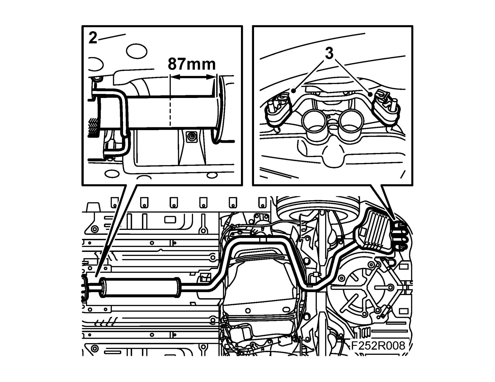
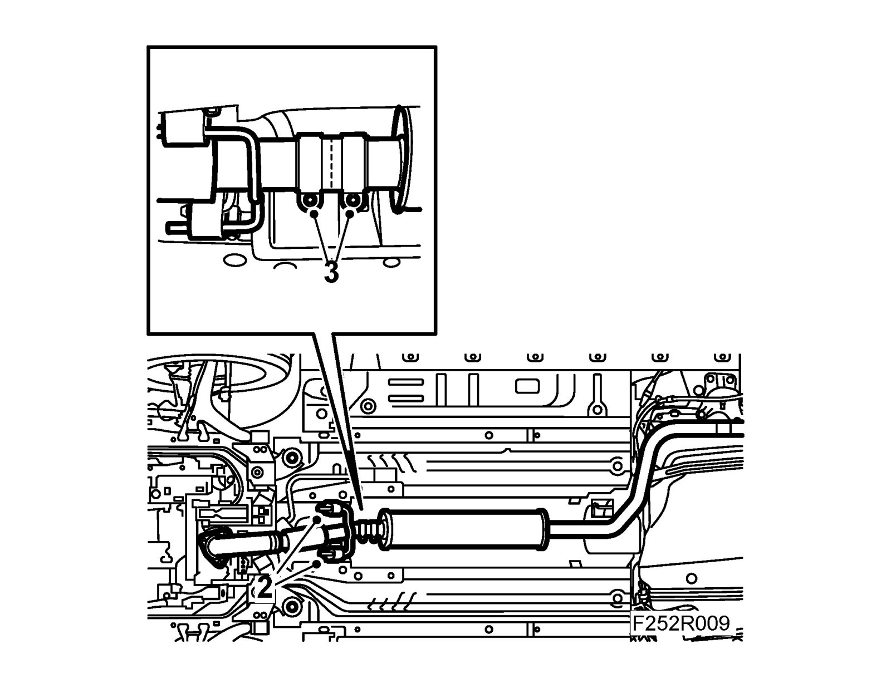
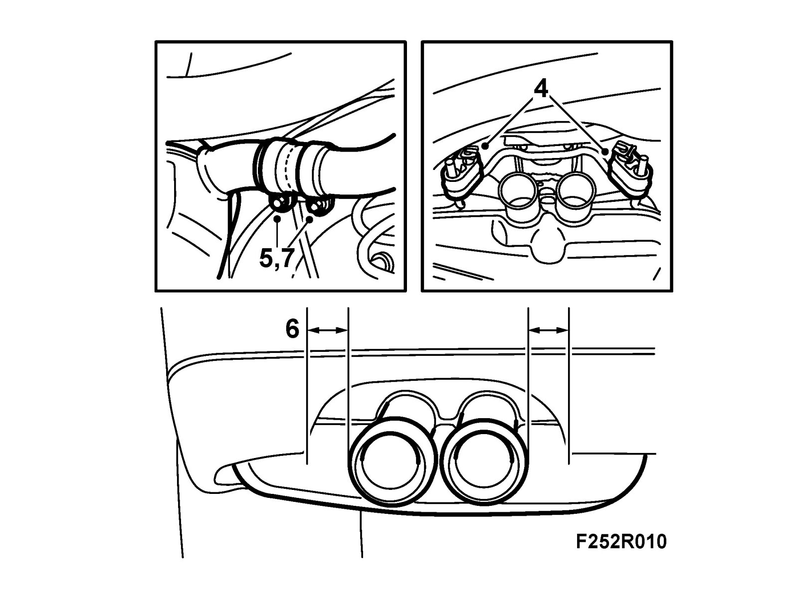

Exhaust System Assembly, B207
Exhaust system assembly, B207To remove
1. Raise the car.
2. Cut the front pipe between the flex pipe and the silencer at 87 mm (see illustration). Cut the pipe at right-angles using 83 95 667 Pipe cutter/exhaust system.
3. Remove the front and rear silencers.

To fit
1. Clean the joint.
2. Put on the joint clamp and fit the front silencer with new rubber mountings.

3. Adjust the joint clamp so that the pipe ends are in the middle of the clamp.
4. Put on the joint clamp and fit the rear silencer with new rubber mountings.

5. Adjust the joint clamp so that the pipe ends are in the middle of the clamp.
6. Adjust the front and rear silencers so they balance. On cars with visible tail pipe, this must be done so that it is positioned centrally in the tail pipe recess in the rear bumper.
7. Tighten the joint clamps.
Tightening torque 40 Nm (30 lbf ft).
8. Lower the car.
9. Connect an exhaust hose and start the engine. Check the exhaust system for leaks.